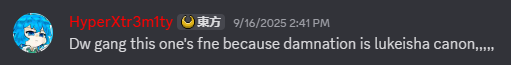

INTERVIEW:


nickyMaurice: "Okily dokily, before we ask any SPICY questions, let's introduce yourself to the 3 people reading this that don't already know who you are."
redmetal:
"hi i'm red, i'm an undertale fan and that stuff, and have worked on some AU stuff.
most prominent being my own dusttale take called damnation but like it's in a limbo spot rn cuz i wanna do a redraft of it at some point.
i been in lukeisha for... uhhhhh.... a year, that's kinda crazy to think about ngl."
"hi"
"oh and i also do art"
Q1:
How did you find out about LUKEISHA?
redmetal:
"ok so funny story, me and hyper actually met up through the insanitytale comms server where i saw some arts of their storyshift and some other miscellaneous au takes (before i knew about lukeisha).
i think something funny happened cuz i drew a funny piece of art in response to something involving seeing some mask, and then i ended up in the server."
"really cool"
nickyMaurice:
"in... insanitytale comms?"
redmetal:
"communications server
i might be kinda roblox brainrotted cuz
that's usually how they call discord servers
since roblox is #stupid and censors that word"
nickyMaurice:
"I was more stuck up on the insanitytale part but ykw sure
also roblox is catching a stray in this interview
What kept you around after joining, anything specifically eye-catching?"
redmetal:
"1. the community was really chill, which is always a good thing because we love people who are chill and nice."
"2. the concepts, lore, and designs that i discovered and looked through in the lukeisha verse were so damn inspiring and cool,
i think i might've subconsciously used elements of them in any one-off drawings or works i make.
and also it's just crazy how basically ONE PERSON did all of this, it's really inspiring"
Q3:
And out of all those concepts... if you had to pick a favorite, which would it be?
redmetal:
"i don't really have a specific favourite because they're all cool,
but if i really had to narrow it down it'd be between hx!killer (ubica i'm pretty sure)
and chopped!man delta sans because their designs are very cool and striking to me"
nickyMaurice:
Aren't we forgetting someone... ... ... 👀
redmetal:
"listen
i know i'm the dusttale guy, and hx!dust is also another fan-favourite of mine because the story,
from what I can piece together, is really well-executed, and his design is also really nice, but i'm not JUST the dusttale guy"
nickyMaurice:
And what about your own take on Dust? Isn't it canonized into the Lukeisha?* How do you feel about that?
redmetal:
"it's canonized???????"

*(yes)
redmetal:
"i thought this was a joke what do you mean"
nickyMaurice:
"uhm, how do you feel NOW that you know it's canon???"
redmetal:
"thank you? i guess?? literally why bruh i don't have any content to show my gratitude hyper why did you actually mean this seriously whyyyyyyyyy"
Q4:
"I think you've drawn me as Shifty being beaten or killed more than once, how do you feel about the character today?"
redmetal:
"toothpaste hair kid is okay i guess"